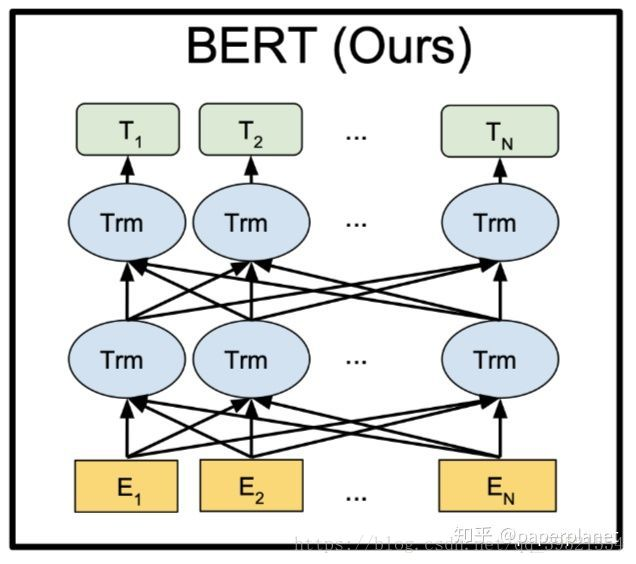
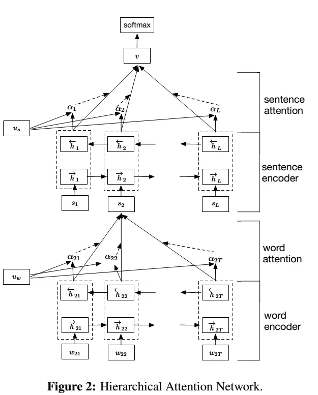
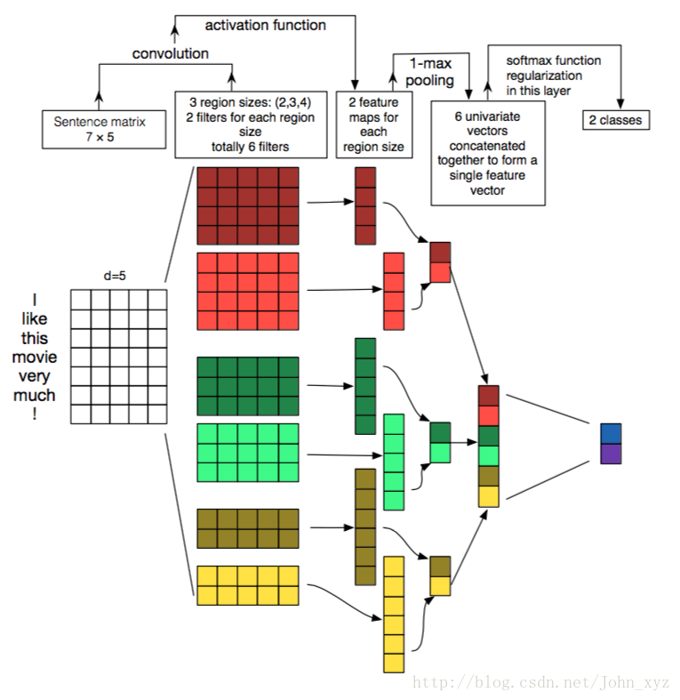
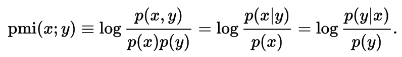
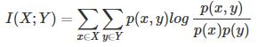

<!DOCTYPE html>
<html>
<head><meta name="generator" content="Hexo 3.8.0">
  <meta charset="utf-8">
  

  
  <title>白驹</title>
  <meta name="viewport" content="width=device-width, initial-scale=1, maximum-scale=1">
  <meta name="keywords" content="java nlp">
<meta property="og:type" content="website">
<meta property="og:title" content="白驹">
<meta property="og:url" content="https://day6.github.io/index.html">
<meta property="og:site_name" content="白驹">
<meta property="og:locale" content="zh">
<meta name="twitter:card" content="summary">
<meta name="twitter:title" content="白驹">
  
    <link rel="alternate" href="/baiju/atom.xml" title="白驹" type="application/atom+xml">
  
  
    <link rel="icon" href="/favicon.png">
  
  
    <link href="//fonts.googleapis.com/css?family=Source+Code+Pro" rel="stylesheet" type="text/css">
  
  <link rel="stylesheet" href="/baiju/css/style.css">
</head>
</html>
<body>
  <div id="container">
    <div id="wrap">
      <header id="header">
  <div id="banner"></div>
  <div id="header-outer" class="outer">
    <div id="header-title" class="inner">
      <h1 id="logo-wrap">
        <a href="/baiju/" id="logo">白驹</a>
      </h1>
      
    </div>
    <div id="header-inner" class="inner">
      <nav id="main-nav">
        <a id="main-nav-toggle" class="nav-icon"></a>
        
          <a class="main-nav-link" href="/baiju/">Home</a>
        
          <a class="main-nav-link" href="/baiju/archives">Archives</a>
        
      </nav>
      <nav id="sub-nav">
        
          <a id="nav-rss-link" class="nav-icon" href="/baiju/atom.xml" title="RSS Feed"></a>
        
        <a id="nav-search-btn" class="nav-icon" title="Search"></a>
      </nav>
      <div id="search-form-wrap">
        <form action="//google.com/search" method="get" accept-charset="UTF-8" class="search-form"><input type="search" name="q" class="search-form-input" placeholder="Search"><button type="submit" class="search-form-submit">&#xF002;</button><input type="hidden" name="sitesearch" value="https://day6.github.io"></form>
      </div>
    </div>
  </div>
</header>
      <div class="outer">
        <section id="main">
  
    <article id="post-task10" class="article article-type-post" itemscope itemprop="blogPost">
  <div class="article-meta">
    <a href="/baiju/2019/05/29/task10/" class="article-date">
  <time datetime="2019-05-29T14:38:39.000Z" itemprop="datePublished">2019-05-29</time>
</a>
    
  </div>
  <div class="article-inner">
    
    
      <header class="article-header">
        
  
    <h1 itemprop="name">
      <a class="article-title" href="/baiju/2019/05/29/task10/">task10</a>
    </h1>
  

      </header>
    
    <div class="article-entry" itemprop="articleBody">
      
        <h1 id="Transformer的原理"><a href="#Transformer的原理" class="headerlink" title="Transformer的原理"></a>Transformer的原理</h1><p>  模型结构如下图：<br>  <br>  和大多数seq2seq模型一样，transformer的结构也是由encoder和decoder组成。</p>
<h1 id="BERT的原理"><a href="#BERT的原理" class="headerlink" title="BERT的原理"></a>BERT的原理</h1><p>  BERT的全称是Bidirectional Encoder Representation from Transformers，即双向Transformer的Encoder，因为decoder是不能获要预测的信息的。模型的主要创新点都在pre-train方法上，即用了Masked LM和Next Sentence Prediction两种方法分别捕捉词语和句子级别的representation。<br>  </p>
<h2 id="意义"><a href="#意义" class="headerlink" title="意义"></a>意义</h2><p>  BERT是一个语言表征模型（language representation model），通过超大数据、巨大模型、和极大的计算开销训练而成，在11个自然语言处理的任务中取得了最优（state-of-the-art, SOTA）结果。或许你已经猜到了此模型出自何方，没错，它产自谷歌。估计不少人会调侃这种规模的实验已经基本让一般的实验室和研究员望尘莫及了，但它确实给我们提供了很多宝贵的经验：</p>
<p>  深度学习就是表征学习 （Deep learning is representation learning）：”We show that pre-trained representations eliminate the needs of many heavily engineered task-specific architectures”. 在11项BERT刷出新境界的任务中，大多只在预训练表征（pre-trained representation）微调（fine-tuning）的基础上加一个线性层作为输出（linear output layer）。在序列标注的任务里（e.g. NER），甚至连序列输出的依赖关系都先不管（i.e. non-autoregressive and no CRF），照样秒杀之前的SOTA，可见其表征学习能力之强大。<br>  规模很重要（Scale matters）：”One of our core claims is that the deep bidirectionality of BERT, which is enabled by masked LM pre-training, is the single most important improvement of BERT compared to previous work”. 这种遮挡（mask）在语言模型上的应用对很多人来说已经不新鲜了，但确是BERT的作者在如此超大规模的数据+模型+算力的基础上验证了其强大的表征学习能力。这样的模型，甚至可以延伸到很多其他的模型，可能之前都被不同的实验室提出和试验过，只是由于规模的局限没能充分挖掘这些模型的潜力，而遗憾地让它们被淹没在了滚滚的paper洪流之中。</p>
<p>  预训练价值很大（Pre-training is important）：”We believe that this is the first work to demonstrate that scaling to extreme model sizes also leads to large improvements on very small-scale tasks, provided that the model has been sufficiently pre-trained”. 预训练已经被广泛应用在各个领域了（e.g. ImageNet for CV, Word2Vec in NLP），多是通过大模型大数据，这样的大模型给小规模任务能带来的提升有几何，作者也给出了自己的答案。BERT模型的预训练是用Transformer做的，但我想换做LSTM或者GRU的话应该不会有太大性能上的差别，当然训练计算时的并行能力就另当别论了。</p>
<h1 id="参考"><a href="#参考" class="headerlink" title="参考"></a>参考</h1><ul>
<li><a href="https://blog.csdn.net/qq_39521554/article/details/83062188" target="_blank" rel="noopener">谷歌BERT模型深度解析</a></li>
<li><a href="https://github.com/google-research/bert" target="_blank" rel="noopener">Bert</a></li>
</ul>

      
    </div>
    <footer class="article-footer">
      <a data-url="https://day6.github.io/2019/05/29/task10/" data-id="cjwanhnk400017ntvsikkqjum" class="article-share-link">Share</a>
      
      
  <ul class="article-tag-list"><li class="article-tag-list-item"><a class="article-tag-list-link" href="/baiju/tags/BERT/">BERT</a></li></ul>

    </footer>
  </div>
  
</article>


  
    <article id="post-task9" class="article article-type-post" itemscope itemprop="blogPost">
  <div class="article-meta">
    <a href="/baiju/2019/05/27/task9/" class="article-date">
  <time datetime="2019-05-27T15:48:19.000Z" itemprop="datePublished">2019-05-27</time>
</a>
    
  </div>
  <div class="article-inner">
    
    
      <header class="article-header">
        
  
    <h1 itemprop="name">
      <a class="article-title" href="/baiju/2019/05/27/task9/">task9</a>
    </h1>
  

      </header>
    
    <div class="article-entry" itemprop="articleBody">
      
        <h1 id="Attention原理"><a href="#Attention原理" class="headerlink" title="Attention原理"></a>Attention原理</h1><p>  在传统的 encoder-decoder 模型中，encoder 读取输入的句子将其转换为一个定长的向量，然后decoder 再将这个向量解码为对应的输出。然而，此时信息被压缩到一个定长的向量中，内容比较复杂，同时对于较长的输入句子，转换成定长向量可能带来一定的损失，因此随着输入序列长度的上升，这种结构的效果面临着挑战。</p>
<p>  Attention 机制可以解决这种由长序列到定长向量转化而造成的信息损失问题。Attention 即注意力，它和人看文章或者图片时的思路类似，即将注意力集中到某几个区域上来帮助当前决策。</p>
<h1 id="HAN的原理（Hierarchical-Attention-Networks）"><a href="#HAN的原理（Hierarchical-Attention-Networks）" class="headerlink" title="HAN的原理（Hierarchical Attention Networks）"></a>HAN的原理（Hierarchical Attention Networks）</h1><ul>
<li>第一： 利用文档原有的层次结构特性（句子是由单词组成，文档是由句子组成），先使用单词的词向量表示句子，再此基础上以句子向量构建文档的信息表示。</li>
<li>第二：在文档中，句子对文档的重要性贡献有差异，在句子中单词对句子的重要性贡献也有差异。而单词和句子的重要性依赖于上下文环境。相同的单词，在不同的上下文中所表现出的重要性是不一样的。为了描述这种情况，引入了Attention机制来描述这种重要性。<br>文章分别从句子级和文档级两个层次使用Attention机制。Attention机制可以带来两个优点：一个可以提升分类性能，第二个可以提升识别出在影响最终分类决策的单词或句子的重要性。<br></li>
</ul>
<h1 id="python"><a href="#python" class="headerlink" title="python"></a>python</h1><p>  AttLayer:<br><figure class="highlight plain"><table><tr><td class="gutter"><pre><span class="line">1</span><br><span class="line">2</span><br><span class="line">3</span><br><span class="line">4</span><br><span class="line">5</span><br><span class="line">6</span><br><span class="line">7</span><br><span class="line">8</span><br><span class="line">9</span><br><span class="line">10</span><br><span class="line">11</span><br><span class="line">12</span><br><span class="line">13</span><br><span class="line">14</span><br><span class="line">15</span><br><span class="line">16</span><br><span class="line">17</span><br><span class="line">18</span><br><span class="line">19</span><br><span class="line">20</span><br><span class="line">21</span><br><span class="line">22</span><br><span class="line">23</span><br><span class="line">24</span><br><span class="line">25</span><br><span class="line">26</span><br><span class="line">27</span><br><span class="line">28</span><br><span class="line">29</span><br><span class="line">30</span><br><span class="line">31</span><br><span class="line">32</span><br><span class="line">33</span><br><span class="line">34</span><br><span class="line">35</span><br><span class="line">36</span><br><span class="line">37</span><br><span class="line">38</span><br><span class="line">39</span><br><span class="line">40</span><br></pre></td><td class="code"><pre><span class="line">class AttLayer(Layer):</span><br><span class="line">    def __init__(self, attention_dim):</span><br><span class="line">        self.init = initializers.get(&apos;normal&apos;)</span><br><span class="line">        self.supports_masking = True</span><br><span class="line">        self.attention_dim = attention_dim</span><br><span class="line">        super(AttLayer, self).__init__()</span><br><span class="line"></span><br><span class="line">    def build(self, input_shape):</span><br><span class="line">        assert len(input_shape) == 3</span><br><span class="line">        self.W = K.variable(self.init((input_shape[-1], self.attention_dim)))</span><br><span class="line">        self.b = K.variable(self.init((self.attention_dim, )))</span><br><span class="line">        self.u = K.variable(self.init((self.attention_dim, 1)))</span><br><span class="line">        self.trainable_weights = [self.W, self.b, self.u]</span><br><span class="line">        super(AttLayer, self).build(input_shape)</span><br><span class="line"></span><br><span class="line">    def compute_mask(self, inputs, mask=None):</span><br><span class="line">        return mask</span><br><span class="line"></span><br><span class="line">    def call(self, x, mask=None):</span><br><span class="line">        # size of x :[batch_size, sel_len, attention_dim]</span><br><span class="line">        # size of u :[batch_size, attention_dim]</span><br><span class="line">        # uit = tanh(xW+b)</span><br><span class="line">        uit = K.tanh(K.bias_add(K.dot(x, self.W), self.b))</span><br><span class="line">        ait = K.dot(uit, self.u)</span><br><span class="line">        ait = K.squeeze(ait, -1)</span><br><span class="line"></span><br><span class="line">        ait = K.exp(ait)</span><br><span class="line"></span><br><span class="line">        if mask is not None:</span><br><span class="line">            # Cast the mask to floatX to avoid float64 upcasting in theano</span><br><span class="line">            ait *= K.cast(mask, K.floatx())</span><br><span class="line">        ait /= K.cast(K.sum(ait, axis=1, keepdims=True) + K.epsilon(), K.floatx())</span><br><span class="line">        ait = K.expand_dims(ait)</span><br><span class="line">        weighted_input = x * ait</span><br><span class="line">        output = K.sum(weighted_input, axis=1)</span><br><span class="line"></span><br><span class="line">        return output</span><br><span class="line"></span><br><span class="line">    def compute_output_shape(self, input_shape):</span><br><span class="line">        return (input_shape[0], input_shape[-1])</span><br></pre></td></tr></table></figure></p>
<p>  train:<br><figure class="highlight plain"><table><tr><td class="gutter"><pre><span class="line">1</span><br><span class="line">2</span><br><span class="line">3</span><br><span class="line">4</span><br><span class="line">5</span><br><span class="line">6</span><br><span class="line">7</span><br><span class="line">8</span><br><span class="line">9</span><br><span class="line">10</span><br><span class="line">11</span><br><span class="line">12</span><br><span class="line">13</span><br><span class="line">14</span><br><span class="line">15</span><br><span class="line">16</span><br><span class="line">17</span><br><span class="line">18</span><br><span class="line">19</span><br><span class="line">20</span><br></pre></td><td class="code"><pre><span class="line">sentence_input = Input(shape=(MAX_SENT_LENGTH,), dtype=&apos;int32&apos;)</span><br><span class="line">embedded_sequences = embedding_layer(sentence_input)</span><br><span class="line">l_lstm = Bidirectional(GRU(100, return_sequences=True))(embedded_sequences)</span><br><span class="line">l_att = AttLayer(100)(l_lstm)</span><br><span class="line">sentEncoder = Model(sentence_input, l_att)</span><br><span class="line"></span><br><span class="line">review_input = Input(shape=(MAX_SENTS, MAX_SENT_LENGTH), dtype=&apos;int32&apos;)</span><br><span class="line">review_encoder = TimeDistributed(sentEncoder)(review_input)</span><br><span class="line">l_lstm_sent = Bidirectional(GRU(100, return_sequences=True))(review_encoder)</span><br><span class="line">l_att_sent = AttLayer(100)(l_lstm_sent)</span><br><span class="line">preds = Dense(2, activation=&apos;softmax&apos;)(l_att_sent)</span><br><span class="line">model = Model(review_input, preds)</span><br><span class="line"></span><br><span class="line">model.compile(loss=&apos;categorical_crossentropy&apos;,</span><br><span class="line">              optimizer=&apos;rmsprop&apos;,</span><br><span class="line">              metrics=[&apos;acc&apos;])</span><br><span class="line"></span><br><span class="line">print(&quot;model fitting - Hierachical attention network&quot;)</span><br><span class="line">model.fit(x_train, y_train, validation_data=(x_val, y_val),</span><br><span class="line">          nb_epoch=10, batch_size=50)</span><br></pre></td></tr></table></figure></p>
<h1 id="参考"><a href="#参考" class="headerlink" title="参考"></a>参考</h1><ul>
<li><a href="http://pelhans.com/2019/04/26/deepdive_tensorflow-note10/" target="_blank" rel="noopener">深度学习笔记</a></li>
<li><a href="https://blog.csdn.net/yyy430/article/details/88635646" target="_blank" rel="noopener">【NLP实践-Task9 Attention原理 】attention &amp; HAN &amp; 文本分类实战</a></li>
<li><a href="https://github.com/richliao/textClassifier" target="_blank" rel="noopener">https://github.com/richliao/textClassifier</a></li>
</ul>

      
    </div>
    <footer class="article-footer">
      <a data-url="https://day6.github.io/2019/05/27/task9/" data-id="cjwanhnkp000b7ntv2nl8wh1v" class="article-share-link">Share</a>
      
      
  <ul class="article-tag-list"><li class="article-tag-list-item"><a class="article-tag-list-link" href="/baiju/tags/Attention原理/">Attention原理</a></li></ul>

    </footer>
  </div>
  
</article>


  
    <article id="post-task8" class="article article-type-post" itemscope itemprop="blogPost">
  <div class="article-meta">
    <a href="/baiju/2019/05/26/task8/" class="article-date">
  <time datetime="2019-05-26T01:33:48.000Z" itemprop="datePublished">2019-05-26</time>
</a>
    
  </div>
  <div class="article-inner">
    
    
      <header class="article-header">
        
  
    <h1 itemprop="name">
      <a class="article-title" href="/baiju/2019/05/26/task8/">task8</a>
    </h1>
  

      </header>
    
    <div class="article-entry" itemprop="articleBody">
      
        <h1 id="RNN"><a href="#RNN" class="headerlink" title="RNN"></a>RNN</h1><p>  递归神经网络（RNN）是神经网络的一种。单纯的RNN因为无法处理随着递归，权重指数级爆炸或梯度消失问题，难以捕捉长期时间关联；而结合不同的LSTM可以很好解决这个问题。</p>
<p>  对于神经网络的训练，梯度在训练中起到很关键的作用。 如果在训练过程中发生了梯度消失，这也就意味着我们的权重无法被更新，最终导致训练失败。而梯度爆炸所带来的梯度过大，从而大幅度更新网络参数，造成网络不稳定（可以理解为梯度步伐太大）。在极端情况下，权重的值变得特别大，以至于结果会溢出（NaN值）</p>
<h2 id="这会造成哪些问题？"><a href="#这会造成哪些问题？" class="headerlink" title="这会造成哪些问题？"></a>这会造成哪些问题？</h2><ul>
<li>梯度消失会导致我们的神经网络中前面层的网络权重无法得到更新，也就停止了学习。</li>
<li>梯度爆炸会使得学习不稳定， 参数变化太大导致无法获取最优参数。</li>
<li>在深度多层感知机网络中，梯度爆炸会导致网络不稳定，最好的结果是无法从训练数据中学习，最坏的结果是由于权重值为NaN而无法更新权重。</li>
<li>在循环神经网络（RNN）中，梯度爆炸会导致网络不稳定，使得网络无法从训练数据中得到很好的学习，最好的结果是网络不能在长输入数据序列上学习。</li>
</ul>
<h2 id="随时间反向传播（BPTT）算法"><a href="#随时间反向传播（BPTT）算法" class="headerlink" title="随时间反向传播（BPTT）算法"></a>随时间反向传播（BPTT）算法</h2><p>  Backpropagation through time (BPTT) is a gradient-based technique for training certain types of recurrent neural networks. It can be used to train Elman networks. The algorithm was independently derived by numerous researchers.</p>
<h2 id="长短期记忆（LSTTM）"><a href="#长短期记忆（LSTTM）" class="headerlink" title="长短期记忆（LSTTM）"></a>长短期记忆（LSTTM）</h2><p>  长短期记忆（英语：Long Short-Term Memory，LSTM）是一种时间递归神经网络（RNN）[1]，论文首次发表于1997年。由于独特的设计结构，LSTM适合于处理和预测时间序列中间隔和延迟非常长的重要事件。</p>
<p>  LSTM的表现通常比时间递归神经网络及隐马尔科夫模型（HMM）更好，比如用在不分段连续手写识别上[2]。2009年，用LSTM构建的人工神经网络模型赢得过ICDAR手写识别比赛冠军。LSTM还普遍用于自主语音识别，2013年运用TIMIT自然演讲数据库达成17.7%错误率的纪录。作为非线性模型，LSTM可作为复杂的非线性单元用于构造更大型深度神经网络。</p>
<h2 id="Text-RNN"><a href="#Text-RNN" class="headerlink" title="Text-RNN"></a>Text-RNN</h2><p>  TextCNN擅长捕获更短的序列信息，但是TextRNN擅长捕获更长的序列信息。具体到文本分类任务中，BiLSTM从某种意义上可以理解为可以捕获变长且双向的N-Gram信息。</p>
<p>  将CNN和RNN用在文本分类中都能取得显著的效果，但是有一个不错的地方就是可解释性不好，特别是去分析错误案例的时候，而注意力机制[Attention]能够很好的给出每个词对结果的贡献程度，已经成为Seq2Seq模型的标配，实际上文本分类也可以理解为一种特殊的Seq2Seq模型。因此，注意力机制的引入，可以在某种程度上提高深度学习文本分类模型的可解释性。</p>
<h3 id="python"><a href="#python" class="headerlink" title="python"></a>python</h3><figure class="highlight plain"><table><tr><td class="gutter"><pre><span class="line">1</span><br><span class="line">2</span><br><span class="line">3</span><br><span class="line">4</span><br><span class="line">5</span><br><span class="line">6</span><br><span class="line">7</span><br><span class="line">8</span><br><span class="line">9</span><br><span class="line">10</span><br><span class="line">11</span><br><span class="line">12</span><br><span class="line">13</span><br><span class="line">14</span><br><span class="line">15</span><br><span class="line">16</span><br><span class="line">17</span><br><span class="line">18</span><br><span class="line">19</span><br><span class="line">20</span><br><span class="line">21</span><br><span class="line">22</span><br><span class="line">23</span><br><span class="line">24</span><br><span class="line">25</span><br><span class="line">26</span><br><span class="line">27</span><br><span class="line">28</span><br><span class="line">29</span><br><span class="line">30</span><br><span class="line">31</span><br><span class="line">32</span><br><span class="line">33</span><br><span class="line">34</span><br><span class="line">35</span><br><span class="line">36</span><br><span class="line">37</span><br><span class="line">38</span><br><span class="line">39</span><br><span class="line">40</span><br><span class="line">41</span><br><span class="line">42</span><br><span class="line">43</span><br><span class="line">44</span><br><span class="line">45</span><br><span class="line">46</span><br><span class="line">47</span><br><span class="line">48</span><br><span class="line">49</span><br><span class="line">50</span><br><span class="line">51</span><br><span class="line">52</span><br><span class="line">53</span><br><span class="line">54</span><br><span class="line">55</span><br><span class="line">56</span><br><span class="line">57</span><br><span class="line">58</span><br><span class="line">59</span><br><span class="line">60</span><br><span class="line">61</span><br><span class="line">62</span><br><span class="line">63</span><br><span class="line">64</span><br><span class="line">65</span><br><span class="line">66</span><br><span class="line">67</span><br><span class="line">68</span><br><span class="line">69</span><br><span class="line">70</span><br><span class="line">71</span><br><span class="line">72</span><br><span class="line">73</span><br><span class="line">74</span><br><span class="line">75</span><br><span class="line">76</span><br><span class="line">77</span><br><span class="line">78</span><br><span class="line">79</span><br></pre></td><td class="code"><pre><span class="line">learn = tf.contrib.learn</span><br><span class="line"></span><br><span class="line">def rnn_model(features, target):</span><br><span class="line">    &quot;&quot;&quot;RNN model to predict from sequence of words to a class.&quot;&quot;&quot;</span><br><span class="line">    # Convert indexes of words into embeddings.</span><br><span class="line">    # This creates embeddings matrix of [n_words, EMBEDDING_SIZE] and then</span><br><span class="line">    # maps word indexes of the sequence into [batch_size, sequence_length,</span><br><span class="line">    # EMBEDDING_SIZE].</span><br><span class="line">    word_vectors = tf.contrib.layers.embed_sequence(</span><br><span class="line">        features, vocab_size=n_words, embed_dim=EMBEDDING_SIZE, scope=&apos;words&apos;)</span><br><span class="line"></span><br><span class="line">    # Split into list of embedding per word, while removing doc length dim.</span><br><span class="line">    # word_list results to be a list of tensors [batch_size, EMBEDDING_SIZE].</span><br><span class="line">    word_list = tf.unstack(word_vectors, axis=1)</span><br><span class="line"></span><br><span class="line">    # Create a Gated Recurrent Unit cell with hidden size of EMBEDDING_SIZE.</span><br><span class="line">    cell = tf.contrib.rnn.GRUCell(EMBEDDING_SIZE)</span><br><span class="line"></span><br><span class="line">    # Create an unrolled Recurrent Neural Networks to length of</span><br><span class="line">    # MAX_DOCUMENT_LENGTH and passes word_list as inputs for each unit.</span><br><span class="line">    _, encoding = tf.contrib.rnn.static_rnn(cell, word_list, dtype=tf.float32)</span><br><span class="line"></span><br><span class="line">    # Given encoding of RNN, take encoding of last step (e.g hidden size of the</span><br><span class="line">    # neural network of last step) and pass it as features for logistic</span><br><span class="line">    # regression over output classes.</span><br><span class="line">    # target = tf.one_hot(target, 15, 1, 0)</span><br><span class="line">    logits = tf.contrib.layers.fully_connected(encoding, 2794, activation_fn=None)</span><br><span class="line">    loss = tf.losses.softmax_cross_entropy(logits, target)</span><br><span class="line">    tf.losses.softmax_cross_entropy(onehot_labels=tar)</span><br><span class="line">    # Create a training op.</span><br><span class="line">    train_op = tf.contrib.layers.optimize_loss(</span><br><span class="line">        loss,</span><br><span class="line">        tf.contrib.framework.get_global_step(),</span><br><span class="line">        optimizer=&apos;Adam&apos;,</span><br><span class="line">        learning_rate=0.01)</span><br><span class="line"></span><br><span class="line">    return (&#123;</span><br><span class="line">                &apos;class&apos;: tf.argmax(logits, 1),</span><br><span class="line">                &apos;prob&apos;: tf.nn.softmax(logits)</span><br><span class="line">            &#125;, loss, train_op)</span><br><span class="line"></span><br><span class="line">def main():</span><br><span class="line">    data, label = data_utils.read_raw_data(FLAGS.data_dir + FLAGS.data_file, FLAGS.data_dir + FLAGS.label_file)</span><br><span class="line">    # Process vocabulary</span><br><span class="line">    vocab_processor = learn.preprocessing.VocabularyProcessor(MAX_DOCUMENT_LENGTH)</span><br><span class="line"></span><br><span class="line">    x = np.array(list(vocab_processor.fit_transform(data)))</span><br><span class="line">    del data</span><br><span class="line">    # Process label to one hot vector</span><br><span class="line">    lb = LabelBinarizer()</span><br><span class="line">    y = np.array(list(lb.fit_transform(label)))</span><br><span class="line">    del label</span><br><span class="line">    # np.random.seed(10)</span><br><span class="line">    # shuffle_indices = np.random.permutation(np.arange(len(y)))</span><br><span class="line">    # x_shuffled = tf.random_shuffle(x, seed=10)</span><br><span class="line">    # y_shuffled = tf.random_shuffle(y, seed=10)</span><br><span class="line">    # x_shuffled = x[shuffle_indices]</span><br><span class="line">    # y_shuffled = y[shuffle_indices]</span><br><span class="line">    x_shuffled = x</span><br><span class="line">    y_shuffled = y</span><br><span class="line">    dev_sample_index = -1 * int(FLAGS.test_sample_percentage * float(len(y)))</span><br><span class="line">    x_train, x_test = x_shuffled[:dev_sample_index], x_shuffled[dev_sample_index:]</span><br><span class="line">    y_train, y_test = y_shuffled[:dev_sample_index], y_shuffled[dev_sample_index:]</span><br><span class="line">    # pdb.set_trace()</span><br><span class="line"></span><br><span class="line">    # Build model</span><br><span class="line">    # Switch between rnn_model and bag_of_words_model to test different models.</span><br><span class="line">    model_fn = rnn_model</span><br><span class="line">    if FLAGS.bow_model:</span><br><span class="line">        model_fn = bag_of_words_model</span><br><span class="line"></span><br><span class="line">    classifier = learn.SKCompat(learn.Estimator(model_fn=model_fn))</span><br><span class="line"></span><br><span class="line">    # Train and predict</span><br><span class="line">    classifier.fit(x_train, y_train, steps=20000)</span><br><span class="line">    y_predicted = [</span><br><span class="line">        p[&apos;class&apos;] for p in classifier.predict(x_test, as_iterable=True)]</span><br><span class="line">    score = metrics.accuracy_score(y_test, y_predicted)</span><br><span class="line">    print(&apos;Accuracy: &#123;0:f&#125;&apos;.format(score))</span><br></pre></td></tr></table></figure>
<h1 id="参考"><a href="#参考" class="headerlink" title="参考"></a>参考</h1><ul>
<li><a href="https://www.cnblogs.com/pinard/p/6509630.html" target="_blank" rel="noopener">循环神经网络(RNN)模型与前向反向传播算法</a></li>
<li><a href="https://www.cnblogs.com/wuliytTaotao/p/9512963.html" target="_blank" rel="noopener">循环神经网络（Recurrent Neural Network，RNN）</a></li>
<li><a href="https://zhuanlan.zhihu.com/p/44163528" target="_blank" rel="noopener">RNN 的梯度消失问题</a></li>
<li><a href="https://zh.wikipedia.org/wiki/%E9%95%B7%E7%9F%AD%E6%9C%9F%E8%A8%98%E6%86%B6" target="_blank" rel="noopener">长短期记忆</a></li>
<li><a href="https://github.com/huazhisong/TextRNN/blob/master/train_rnn.py" target="_blank" rel="noopener">TextRNN</a></li>
</ul>

      
    </div>
    <footer class="article-footer">
      <a data-url="https://day6.github.io/2019/05/26/task8/" data-id="cjwanhnkq000d7ntvdsipr2xf" class="article-share-link">Share</a>
      
      
  <ul class="article-tag-list"><li class="article-tag-list-item"><a class="article-tag-list-link" href="/baiju/tags/循环和递归神经网络/">循环和递归神经网络</a></li></ul>

    </footer>
  </div>
  
</article>


  
    <article id="post-task7" class="article article-type-post" itemscope itemprop="blogPost">
  <div class="article-meta">
    <a href="/baiju/2019/05/24/task7/" class="article-date">
  <time datetime="2019-05-24T13:39:17.000Z" itemprop="datePublished">2019-05-24</time>
</a>
    
  </div>
  <div class="article-inner">
    
    
      <header class="article-header">
        
  
    <h1 itemprop="name">
      <a class="article-title" href="/baiju/2019/05/24/task7/">task7</a>
    </h1>
  

      </header>
    
    <div class="article-entry" itemprop="articleBody">
      
        <h1 id="卷积神经网络"><a href="#卷积神经网络" class="headerlink" title="卷积神经网络"></a>卷积神经网络</h1><h2 id="卷积运算"><a href="#卷积运算" class="headerlink" title="卷积运算"></a>卷积运算</h2><p>  把数据通过一个卷积核变化成特征，便于后面的分离。计算方式与信号系统中的相同。</p>
<p>  离散卷积可以看作矩阵乘法，这个矩阵元素被限制为必须和另外一些元素相等。卷积核函数（特征映射）是由学习算法优化得到张量的参数，它可以提取不同需求的信息。每次框选与移动相当于一个神经元，多通道则有多维矩阵组成的张量，相比多层神经网络其实就是拿掉了一些参数。</p>
<h2 id="池化运算"><a href="#池化运算" class="headerlink" title="池化运算"></a>池化运算</h2><p>  把很多数据用最大值或者平均值代替。目的是降低数据量。</p>
<h2 id="Text-CNN"><a href="#Text-CNN" class="headerlink" title="Text-CNN"></a>Text-CNN</h2><p>  </p>
<h2 id="python"><a href="#python" class="headerlink" title="python"></a>python</h2><figure class="highlight plain"><table><tr><td class="gutter"><pre><span class="line">1</span><br><span class="line">2</span><br><span class="line">3</span><br><span class="line">4</span><br><span class="line">5</span><br><span class="line">6</span><br><span class="line">7</span><br><span class="line">8</span><br><span class="line">9</span><br><span class="line">10</span><br><span class="line">11</span><br><span class="line">12</span><br><span class="line">13</span><br><span class="line">14</span><br><span class="line">15</span><br><span class="line">16</span><br><span class="line">17</span><br><span class="line">18</span><br><span class="line">19</span><br><span class="line">20</span><br><span class="line">21</span><br><span class="line">22</span><br><span class="line">23</span><br><span class="line">24</span><br><span class="line">25</span><br><span class="line">26</span><br><span class="line">27</span><br><span class="line">28</span><br><span class="line">29</span><br><span class="line">30</span><br><span class="line">31</span><br><span class="line">32</span><br><span class="line">33</span><br><span class="line">34</span><br><span class="line">35</span><br><span class="line">36</span><br><span class="line">37</span><br><span class="line">38</span><br><span class="line">39</span><br><span class="line">40</span><br><span class="line">41</span><br><span class="line">42</span><br><span class="line">43</span><br><span class="line">44</span><br><span class="line">45</span><br><span class="line">46</span><br><span class="line">47</span><br><span class="line">48</span><br><span class="line">49</span><br><span class="line">50</span><br><span class="line">51</span><br><span class="line">52</span><br><span class="line">53</span><br><span class="line">54</span><br><span class="line">55</span><br><span class="line">56</span><br><span class="line">57</span><br><span class="line">58</span><br><span class="line">59</span><br><span class="line">60</span><br><span class="line">61</span><br><span class="line">62</span><br><span class="line">63</span><br><span class="line">64</span><br><span class="line">65</span><br><span class="line">66</span><br><span class="line">67</span><br><span class="line">68</span><br><span class="line">69</span><br><span class="line">70</span><br></pre></td><td class="code"><pre><span class="line"># 1 get paramater</span><br><span class="line">  parse = argparse.ArgumentParser(description=&apos;Paramaters for construct TextCNN Model&apos;)</span><br><span class="line">  # #方式一 type = bool</span><br><span class="line">  # parse.add_argument(&apos;--nonstatic&apos;,type=ast.literal_eval,help=&apos;use textcnn nonstatic or not&apos;,dest=&apos;tt&apos;)</span><br><span class="line">  # 方式二 取bool值的方式)添加互斥的参数</span><br><span class="line">  group_static = parse.add_mutually_exclusive_group(required=True)</span><br><span class="line">  group_static.add_argument(&apos;--static&apos;, dest=&apos;static_flag&apos;, action=&apos;store_true&apos;, help=&apos;use static Text_CNN&apos;)</span><br><span class="line">  group_static.add_argument(&apos;--nonstatic&apos;, dest=&apos;static_flag&apos;, action=&apos;store_false&apos;, help=&apos;use nonstatic Text_CNN&apos;)</span><br><span class="line"></span><br><span class="line">  group_word_vec = parse.add_mutually_exclusive_group(required=True)</span><br><span class="line">  group_word_vec.add_argument(&apos;--word2vec&apos;, dest=&apos;wordvec_flag&apos;, action=&apos;store_true&apos;, help=&apos;word_vec is word2vec&apos;)</span><br><span class="line">  group_word_vec.add_argument(&apos;--rand&apos;, dest=&apos;wordvec_flag&apos;, action=&apos;store_false&apos;, help=&apos;word_vec is rand&apos;)</span><br><span class="line"></span><br><span class="line">  group_shuffer_batch = parse.add_mutually_exclusive_group(required=False)</span><br><span class="line">  group_shuffer_batch.add_argument(&apos;--shuffer&apos;, dest=&apos;shuffer_flag&apos;, action=&apos;store_true&apos;, help=&apos;the train do shuffer&apos;)</span><br><span class="line">  group_shuffer_batch.add_argument(&apos;--no-shuffer&apos;, dest=&apos;shuffer_flag&apos;, action=&apos;store_false&apos;,</span><br><span class="line">                                   help=&apos;the train do not shuffer&apos;)</span><br><span class="line"></span><br><span class="line">  parse.add_argument(&apos;--learnrate&apos;, type=float, dest=&apos;learnrate&apos;, help=&apos;the NN learnRate&apos;, default=0.05)</span><br><span class="line">  parse.add_argument(&apos;--epochs&apos;, type=int, dest=&apos;epochs&apos;, help=&apos;the model train epochs&apos;, default=10)</span><br><span class="line">  parse.add_argument(&apos;--batch_size&apos;, type=int, dest=&apos;batch_size&apos;, help=&apos;the train gd batch size.(50-300)&apos;, default=50)</span><br><span class="line">  parse.add_argument(&apos;--dropout_pro&apos;, type=float, dest=&apos;dropout_pro&apos;, help=&apos;the nn layer dropout_pro&apos;, default=0.5)</span><br><span class="line"></span><br><span class="line">  parse.set_defaults(static_flag=True)</span><br><span class="line">  parse.set_defaults(wordvec_flag=True)</span><br><span class="line">  parse.set_defaults(shuffer_flag=False)</span><br><span class="line"></span><br><span class="line">  args = parse.parse_args()</span><br><span class="line"></span><br><span class="line">  # 2 load data</span><br><span class="line">  print(&apos;load data. . .&apos;)</span><br><span class="line">  X = pickle.load(open(&apos;./NLP/result/word_vec.p&apos;,&apos;rb&apos;))</span><br><span class="line"></span><br><span class="line">  word_vecs_rand, word_vecs, word_cab, sentence_max_len, revs = X[0],X[1],X[2],X[3],X[4]</span><br><span class="line"></span><br><span class="line">  print(&apos;load data finish. . .&apos;)</span><br><span class="line">  # configuration tf</span><br><span class="line">  filter_sizes = [3, 4, 5]</span><br><span class="line">  filter_numbers = 100</span><br><span class="line">  embedding_size = 300</span><br><span class="line">  # use word2vec or not</span><br><span class="line">  W = word_vecs_rand</span><br><span class="line">  if args.wordvec_flag:</span><br><span class="line">      W = word_vecs</span><br><span class="line">      pass</span><br><span class="line">  # pdb.set_trace()</span><br><span class="line">  word_ids,W_list = process_data.getWordsVect(W)</span><br><span class="line"></span><br><span class="line">  # use static train or not</span><br><span class="line">  static_falg = args.static_flag</span><br><span class="line">  # use shuffer the data or not</span><br><span class="line">  shuffer_falg = args.shuffer_flag</span><br><span class="line">  #交叉验证</span><br><span class="line">  results = []</span><br><span class="line">  for index in tqdm(range(10)):</span><br><span class="line">      #打调试断点</span><br><span class="line">      # pdb.set_trace()</span><br><span class="line">      # train_x, train_y, test_x, test_y = process_data.get_train_test_data1(W,revs,index,sentence_max_len,default_values=0.0,vec_size=300)</span><br><span class="line">      train_x, train_y, test_x, test_y = process_data.get_train_test_data2(word_ids,revs,index,sentence_max_len)</span><br><span class="line">      # 3 create TextCNN model</span><br><span class="line">      text_cnn = TextCNN(W_list,shuffer_falg,static_falg,filter_numbers,filter_sizes,sentence_max_len,embedding_size,args.learnrate,args.epochs,args.batch_size,args.dropout_pro)</span><br><span class="line">      # 4 start train</span><br><span class="line">      text_cnn.train(train_x,train_y)</span><br><span class="line">      # 5 validataion</span><br><span class="line">      accur,loss = text_cnn.validataion(test_x, test_y)</span><br><span class="line">      #</span><br><span class="line">      results.append(accur)</span><br><span class="line">      print(&apos;cv &#123;&#125; accur is :&#123;:.3f&#125; loss is &#123;:.3f&#125;&apos;.format(index+1,accur,loss))</span><br><span class="line">      text_cnn.close()</span><br><span class="line">  print(&apos;last accuracy is &#123;&#125;&apos;.format(np.mean(results)))</span><br></pre></td></tr></table></figure>
<h2 id="参考"><a href="#参考" class="headerlink" title="参考"></a>参考</h2><ul>
<li><a href="https://www.zhihu.com/question/49376084" target="_blank" rel="noopener">如何理解卷积神经网络（CNN）中的卷积和池化？</a></li>
<li><a href="https://blog.csdn.net/u014732537/article/details/79573174" target="_blank" rel="noopener">卷积神经网络(TextCNN)在句子分类上的实现</a></li>
</ul>

      
    </div>
    <footer class="article-footer">
      <a data-url="https://day6.github.io/2019/05/24/task7/" data-id="cjwanhnkk000a7ntvfj8gvym4" class="article-share-link">Share</a>
      
      
  <ul class="article-tag-list"><li class="article-tag-list-item"><a class="article-tag-list-link" href="/baiju/tags/卷积神经网络/">卷积神经网络</a></li></ul>

    </footer>
  </div>
  
</article>


  
    <article id="post-task6" class="article article-type-post" itemscope itemprop="blogPost">
  <div class="article-meta">
    <a href="/baiju/2019/05/22/task6/" class="article-date">
  <time datetime="2019-05-22T14:28:50.000Z" itemprop="datePublished">2019-05-22</time>
</a>
    
  </div>
  <div class="article-inner">
    
    
      <header class="article-header">
        
  
    <h1 itemprop="name">
      <a class="article-title" href="/baiju/2019/05/22/task6/">task6</a>
    </h1>
  

      </header>
    
    <div class="article-entry" itemprop="articleBody">
      
        <h2 id="FastText-原理"><a href="#FastText-原理" class="headerlink" title="FastText 原理"></a>FastText 原理</h2><p>1、应用场景<br>fastText是一种Facebook AI Research在16年开源的一个文本分类器。 其特点就是fast。相对于其它文本分类模型，如SVM，Logistic Regression和neural network等模型，fastText在保持分类效果的同时，大大缩短了训练时间。</p>
<p>2、优缺点<br>适合大型数据+高效的训练速度：能够训练模型“在使用标准多核CPU的情况下10分钟内处理超过10亿个词汇”<br>支持多语言表达：利用其语言形态结构，fastText能够被设计用来支持包括英语、德语、西班牙语、法语以及捷克语等多种语言。FastText的性能要比时下流行的word2vec工具明显好上不少，也比其他目前最先进的词态词汇表征要好。<br>fastText专注于文本分类，在许多标准问题上实现当下最好的表现（例如文本倾向性分析或标签预测）。<br>3、FastText的原理<br>fastText 方法包含三部分：模型架构、层次 Softmax 和 N-gram 特征。</p>
<p>fastText 模型输入一个词的序列（一段文本或者一句话)，输出这个词序列属于不同类别的概率。<br>序列中的词和词组组成特征向量，特征向量通过线性变换映射到中间层，中间层再映射到标签。<br>fastText 在预测标签时使用了非线性激活函数，但在中间层不使用非线性激活函数。<br>fastText 模型架构和 Word2Vec 中的 CBOW 模型很类似。不同之处在于，fastText 预测标签，而 CBOW 模型预测中间词。</p>
<p>第一部分：fastText的模型架构类似于CBOW，两种模型都是基于Hierarchical Softmax，都是三层架构：输入层、 隐藏层、输出层。</p>
<p>第二部分：层次之间的映射 </p>
<p>第三部分：fastText的N-gram特征 </p>
<p>  常用的特征是词袋模型（将输入数据转化为对应的Bow形式）。但词袋模型不能考虑词之间的顺序，因此 fastText 还加入了 N-gram 特征。<br>  “我 爱 她” 这句话中的词袋模型特征是 “我”，“爱”, “她”。这些特征和句子 “她 爱 我” 的特征是一样的。如果加入 2-Ngram，第一句话的特征还有 “我-爱” 和 “爱-她”，这两句话 “我 爱 她” 和 “她 爱 我” 就能区别开来了。当然，为了提高效率，我们需要过滤掉低频的 N-gram。 </p>
<p>4、FastText词向量与word2vec对比</p>
<p>  FastText= word2vec中 cbow + h-softmax的灵活使用<br>灵活体现在两个方面：</p>
<p>  模型的输出层：word2vec的输出层，对应的是每一个term，计算某term的概率最大；而fasttext的输出层对应的是分类的label。不过不管输出层对应的是什么内容，起对应的vector都不会被保留和使用；<br>  模型的输入层：word2vec的输入层，是 context window 内的term；而fasttext 对应的整个sentence的内容，包括term，也包括 n-gram的内容；两者本质的不同，体现在 h-softmax的使用。<br>Word2vec的目的是得到词向量，该词向量 最终是在输入层得到，输出层对应的 h-softmax 也会生成一系列的向量，但最终都被抛弃，不会使用。<br>fasttext则充分利用了h-softmax的分类功能，遍历分类树的所有叶节点，找到概率最大的label（一个或者N个）。</p>
<h2 id="FastText-Python"><a href="#FastText-Python" class="headerlink" title="FastText Python"></a>FastText Python</h2><figure class="highlight plain"><table><tr><td class="gutter"><pre><span class="line">1</span><br><span class="line">2</span><br><span class="line">3</span><br><span class="line">4</span><br><span class="line">5</span><br><span class="line">6</span><br><span class="line">7</span><br><span class="line">8</span><br><span class="line">9</span><br><span class="line">10</span><br><span class="line">11</span><br><span class="line">12</span><br></pre></td><td class="code"><pre><span class="line"># _*_coding:utf-8 _*_</span><br><span class="line">import logging</span><br><span class="line">logging.basicConfig(format=&apos;%(asctime)s : %(levelname)s : %(message)s&apos;, level=logging.INFO)</span><br><span class="line">import fasttext</span><br><span class="line">#训练模型</span><br><span class="line">classifier = fasttext.supervised(&quot;news_fasttext_train.txt&quot;,&quot;news_fasttext.model&quot;,label_prefix=&quot;__label__&quot;)</span><br><span class="line"></span><br><span class="line">#load训练好的模型</span><br><span class="line">#classifier = fasttext.load_model(&apos;news_fasttext.model.bin&apos;, label_prefix=&apos;__label__&apos;)</span><br><span class="line">result = classifier.test(&quot;news_fasttext_test.txt&quot;)</span><br><span class="line">print result.precision</span><br><span class="line">print result.recall</span><br></pre></td></tr></table></figure>

      
    </div>
    <footer class="article-footer">
      <a data-url="https://day6.github.io/2019/05/22/task6/" data-id="cjwanhnki00097ntv2pxdjmig" class="article-share-link">Share</a>
      
      
    </footer>
  </div>
  
</article>


  
    <article id="post-task5" class="article article-type-post" itemscope itemprop="blogPost">
  <div class="article-meta">
    <a href="/baiju/2019/05/19/task5/" class="article-date">
  <time datetime="2019-05-19T14:45:08.000Z" itemprop="datePublished">2019-05-19</time>
</a>
    
  </div>
  <div class="article-inner">
    
    
      <header class="article-header">
        
  
    <h1 itemprop="name">
      <a class="article-title" href="/baiju/2019/05/19/task5/">task5</a>
    </h1>
  

      </header>
    
    <div class="article-entry" itemprop="articleBody">
      
        <h2 id="贝叶斯"><a href="#贝叶斯" class="headerlink" title="贝叶斯"></a>贝叶斯</h2><p>  朴素贝叶斯的原理：</p>
<p>  基于朴素贝叶斯公式，比较出后验概率的最大值来进行分类，后验概率的计算是由先验概率与类条件概率的乘积得出，先验概率和类条件概率要通过训练数据集得出，即为朴素贝叶斯分类模型，将其保存为中间结果，测试文档进行分类时调用这个中间结果得出后验概率。</p>
<figure class="highlight plain"><table><tr><td class="gutter"><pre><span class="line">1</span><br><span class="line">2</span><br><span class="line">3</span><br><span class="line">4</span><br><span class="line">5</span><br><span class="line">6</span><br><span class="line">7</span><br><span class="line">8</span><br><span class="line">9</span><br><span class="line">10</span><br><span class="line">11</span><br><span class="line">12</span><br><span class="line">13</span><br><span class="line">14</span><br><span class="line">15</span><br><span class="line">16</span><br><span class="line">17</span><br><span class="line">18</span><br><span class="line">19</span><br><span class="line">20</span><br><span class="line">21</span><br><span class="line">22</span><br><span class="line">23</span><br><span class="line">24</span><br><span class="line">25</span><br></pre></td><td class="code"><pre><span class="line">def train(clf):</span><br><span class="line">    clf.fit(train_data, train_labels)  # 训练模型</span><br><span class="line">    predict_labels = clf.predict(test_data)</span><br><span class="line">    # 预测对了几个？</span><br><span class="line">    n = 0</span><br><span class="line">    for i in range(len(predict_labels)):</span><br><span class="line">        if predict_labels[i] == test_labels[i]:</span><br><span class="line">            n = n + 1</span><br><span class="line">    print(&quot;正确率: &#123;&#125;&quot;.format(n / len(predict_labels)))</span><br><span class="line"></span><br><span class="line"></span><br><span class="line"># 高斯贝叶斯</span><br><span class="line">clf3 = GaussianNB()</span><br><span class="line">train(clf3)</span><br><span class="line"># 正确率: 0.50848</span><br><span class="line"></span><br><span class="line"># 多项式贝叶斯</span><br><span class="line">clf3 = MultinomialNB()</span><br><span class="line">train(clf3)</span><br><span class="line"># 正确率: 0.49972</span><br><span class="line"></span><br><span class="line"># 伯努利贝叶斯</span><br><span class="line">clf3 = BernoulliNB()</span><br><span class="line">train(clf3)</span><br><span class="line"># 正确率: 0.51236</span><br></pre></td></tr></table></figure>
<h2 id="SVM模型"><a href="#SVM模型" class="headerlink" title="SVM模型"></a>SVM模型</h2><p>  支持向量机SVM是一系列监督学习算法，包括分类，回归，异常点检测。 </p>
<p>  svm的优点：</p>
<ul>
<li>在高纬空间的有效性。</li>
<li>在特征维度高于样本维度的情况下，依然有效。</li>
<li>它的决策函数只使用训练数据的一部分，通常把这一部分数据称之为支持向量，所以它是比较节省内存的。</li>
<li>可以提供各种各样的核函数来扩展SVM的功能。<br>SVM的缺点：</li>
<li>如果特征的维度远大于样本的数目，那么性能将大大的降低。</li>
<li>SVM不直接提供概率估计。</li>
</ul>
<h2 id="参考"><a href="#参考" class="headerlink" title="参考"></a>参考</h2><ul>
<li><a href="https://blog.csdn.net/AQ_cainiao_AQ/article/details/76178128" target="_blank" rel="noopener">Python scikit-learn 模块的SVM方法介绍 </a></li>
<li><a href="https://www.cnblogs.com/pinard/p/6117515.html" target="_blank" rel="noopener">scikit-learn 支持向量机算法库使用小结</a></li>
</ul>

      
    </div>
    <footer class="article-footer">
      <a data-url="https://day6.github.io/2019/05/19/task5/" data-id="cjwanhnkh00087ntvh3g5786t" class="article-share-link">Share</a>
      
      
    </footer>
  </div>
  
</article>


  
    <article id="post-task4" class="article article-type-post" itemscope itemprop="blogPost">
  <div class="article-meta">
    <a href="/baiju/2019/05/16/task4/" class="article-date">
  <time datetime="2019-05-16T13:56:31.000Z" itemprop="datePublished">2019-05-16</time>
</a>
    
  </div>
  <div class="article-inner">
    
    
      <header class="article-header">
        
  
    <h1 itemprop="name">
      <a class="article-title" href="/baiju/2019/05/16/task4/">task4</a>
    </h1>
  

      </header>
    
    <div class="article-entry" itemprop="articleBody">
      
        <h2 id="词袋模型（BOW，bag-of-words）"><a href="#词袋模型（BOW，bag-of-words）" class="headerlink" title="词袋模型（BOW，bag of words）"></a>词袋模型（BOW，bag of words）</h2><p>Jane wants to go to Shenzhen.</p>
<p>Bob  wants to go to Shanghai.</p>
<pre><code>将所有词语装进一个袋子里，不考虑其词法和语序的问题，即每个词语都是独立的。例如上面2个例句，就可以构成一个词袋，袋子里包括Jane、wants、to、go、Shenzhen、Bob、Shanghai。假设建立一个数组（或词典）用于映射匹配
</code></pre><p>[Jane, wants, to, go, Shenzhen, Bob, Shanghai]</p>
<pre><code>那么上面两个例句就可以用以下两个向量表示，对应的下标与映射数组的下标相匹配，其值为该词语出现的次数
</code></pre><p>[1,1,2,1,1,0,0]<br>[0,1,2,1,0,1,1]</p>
<pre><code>这两个词频向量就是词袋模型，可以很明显的看到语序关系已经完全丢失。
</code></pre><h2 id="词向量模型"><a href="#词向量模型" class="headerlink" title="词向量模型"></a>词向量模型</h2><pre><code>词向量模型是考虑词语位置关系的一种模型。通过大量语料的训练，将每一个词语映射到高维度（几千、几万维以上）的向量当中，通过求余弦的方式，可以判断两个词语之间的关系，例如例句中的Jane和Bob在词向量模型中，他们的余弦值可能就接近1，因为这两个都是人名，Shenzhen和Bob的余弦值可能就接近0，因为一个是人名一个是地名。
现在常用word2vec构成词向量模型，它的底层采用基于CBOW和Skip-Gram算法的神经网络模型。
</code></pre><h2 id="Skip-gram-和-CBOW-模型"><a href="#Skip-gram-和-CBOW-模型" class="headerlink" title="Skip-gram 和 CBOW 模型"></a>Skip-gram 和 CBOW 模型</h2><ul>
<li>如果是用一个词语作为输入，来预测它周围的上下文，那这个模型叫做『Skip-gram 模型』</li>
<li>而如果是拿一个词语的上下文作为输入，来预测这个词语本身，则是 『CBOW 模型』</li>
</ul>
<h2 id="word2vec1"><a href="#word2vec1" class="headerlink" title="word2vec1"></a>word2vec1</h2><h3 id="gensim"><a href="#gensim" class="headerlink" title="gensim"></a>gensim</h3><figure class="highlight plain"><table><tr><td class="gutter"><pre><span class="line">1</span><br><span class="line">2</span><br><span class="line">3</span><br><span class="line">4</span><br></pre></td><td class="code"><pre><span class="line">from gensim.models import word2vec</span><br><span class="line">sentences = word2vec.LineSentence(&apos;./in_the_name_of_people_segment.txt&apos;)</span><br><span class="line">model = word2vec.Word2Vec(sentences, hs=1,min_count=1,window=3,size=100)</span><br><span class="line">model.wv.similar_by_word(&apos;沙瑞金&apos;.decode(&apos;utf-8&apos;), topn =100)</span><br></pre></td></tr></table></figure>
<h2 id="参考"><a href="#参考" class="headerlink" title="参考"></a>参考</h2><ul>
<li><a href="https://blog.csdn.net/sinat_36521655/article/details/79993369" target="_blank" rel="noopener">词袋模型（BOW，bag of words）和词向量模型（Word Embedding）概念介绍</a></li>
<li><a href="https://www.cnblogs.com/pinard/p/7160330.html" target="_blank" rel="noopener">word2vec原理(一) CBOW与Skip-Gram模型基础</a></li>
<li><a href="https://zhuanlan.zhihu.com/p/26306795" target="_blank" rel="noopener">秒懂词向量Word2vec的本质</a></li>
<li><a href="https://github.com/tensorflow/tensorflow/blob/r1.10/tensorflow/examples/tutorials/word2vec/word2vec_basic.py" target="_blank" rel="noopener">tensorflow word2vec example</a></li>
</ul>

      
    </div>
    <footer class="article-footer">
      <a data-url="https://day6.github.io/2019/05/16/task4/" data-id="cjwanhnke00057ntvbs3f2kxq" class="article-share-link">Share</a>
      
      
    </footer>
  </div>
  
</article>


  
    <article id="post-task3" class="article article-type-post" itemscope itemprop="blogPost">
  <div class="article-meta">
    <a href="/baiju/2019/05/16/task3/" class="article-date">
  <time datetime="2019-05-16T12:32:44.395Z" itemprop="datePublished">2019-05-16</time>
</a>
    
  </div>
  <div class="article-inner">
    
    
    <div class="article-entry" itemprop="articleBody">
      
        <h1 id="task3"><a href="#task3" class="headerlink" title="task3"></a>task3</h1><h2 id="TF-IDF概述"><a href="#TF-IDF概述" class="headerlink" title="TF-IDF概述"></a>TF-IDF概述</h2><p>TF-IDF是Term Frequency -  Inverse Document Frequency的缩写，即“词频-逆文本频率”。它由两部分组成，TF和IDF。</p>
<h2 id="tf-idf-方法1"><a href="#tf-idf-方法1" class="headerlink" title="tf-idf 方法1"></a>tf-idf 方法1</h2><figure class="highlight plain"><table><tr><td class="gutter"><pre><span class="line">1</span><br><span class="line">2</span><br><span class="line">3</span><br><span class="line">4</span><br><span class="line">5</span><br><span class="line">6</span><br><span class="line">7</span><br><span class="line">8</span><br><span class="line">9</span><br><span class="line">10</span><br><span class="line">11</span><br><span class="line">12</span><br><span class="line">13</span><br></pre></td><td class="code"><pre><span class="line">from sklearn.feature_extraction.text import TfidfTransformer  </span><br><span class="line">from sklearn.feature_extraction.text import CountVectorizer  </span><br><span class="line"></span><br><span class="line">corpus=[&quot;I come to China to travel&quot;, </span><br><span class="line">    &quot;This is a car polupar in China&quot;,          </span><br><span class="line">    &quot;I love tea and Apple &quot;,   </span><br><span class="line">    &quot;The work is to write some papers in science&quot;] </span><br><span class="line"></span><br><span class="line">vectorizer=CountVectorizer()</span><br><span class="line"></span><br><span class="line">transformer = TfidfTransformer()</span><br><span class="line">tfidf = transformer.fit_transform(vectorizer.fit_transform(corpus))  </span><br><span class="line">print(tfidf)</span><br></pre></td></tr></table></figure>
<h2 id="tf-idf-方法2"><a href="#tf-idf-方法2" class="headerlink" title="tf-idf 方法2"></a>tf-idf 方法2</h2><figure class="highlight plain"><table><tr><td class="gutter"><pre><span class="line">1</span><br><span class="line">2</span><br><span class="line">3</span><br><span class="line">4</span><br></pre></td><td class="code"><pre><span class="line">from sklearn.feature_extraction.text import TfidfVectorizer</span><br><span class="line">tfidf2 = TfidfVectorizer()</span><br><span class="line">re = tfidf2.fit_transform(corpus)</span><br><span class="line">print(re)</span><br></pre></td></tr></table></figure>
<h2 id="tf-idf-方法3"><a href="#tf-idf-方法3" class="headerlink" title="tf-idf 方法3"></a>tf-idf 方法3</h2><figure class="highlight plain"><table><tr><td class="gutter"><pre><span class="line">1</span><br><span class="line">2</span><br><span class="line">3</span><br><span class="line">4</span><br><span class="line">5</span><br><span class="line">6</span><br><span class="line">7</span><br><span class="line">8</span><br><span class="line">9</span><br><span class="line">10</span><br><span class="line">11</span><br><span class="line">12</span><br><span class="line">13</span><br><span class="line">14</span><br><span class="line">15</span><br><span class="line">16</span><br><span class="line">17</span><br><span class="line">18</span><br><span class="line">19</span><br><span class="line">20</span><br><span class="line">21</span><br><span class="line">22</span><br><span class="line">23</span><br><span class="line">24</span><br><span class="line">25</span><br><span class="line">26</span><br><span class="line">27</span><br><span class="line">28</span><br><span class="line">29</span><br><span class="line">30</span><br><span class="line">31</span><br><span class="line">32</span><br><span class="line">33</span><br><span class="line">34</span><br><span class="line">35</span><br><span class="line">36</span><br><span class="line">37</span><br><span class="line">38</span><br><span class="line">39</span><br><span class="line">40</span><br><span class="line">41</span><br><span class="line">42</span><br><span class="line">43</span><br><span class="line">44</span><br><span class="line">45</span><br></pre></td><td class="code"><pre><span class="line">def tf(word, count):</span><br><span class="line">    return count[word] / sum(count.values())</span><br><span class="line">def n_containing(word, count_list):</span><br><span class="line">    return sum(1 for count in count_list if word in count)</span><br><span class="line">def idf(word, count_list):</span><br><span class="line">    return math.log(len(count_list)) / (1 + n_containing(word, count_list))</span><br><span class="line">def tfidf(word, count, count_list):</span><br><span class="line">    return tf(word, count) * idf(word, count_list)</span><br><span class="line"></span><br><span class="line">def get_tokens(text):</span><br><span class="line">    lower = text.lower()</span><br><span class="line">    remove_punctuation_map = dict((ord(char), None) for char in string.punctuation)</span><br><span class="line">    no_punctuation = lower.translate(remove_punctuation_map)</span><br><span class="line">    tokens = nltk.word_tokenize(no_punctuation)</span><br><span class="line"></span><br><span class="line">    return tokens</span><br><span class="line"></span><br><span class="line">def count_term(text):</span><br><span class="line">    tokens = get_tokens(text)</span><br><span class="line">    filtered = [w for w in tokens if not w in stopwords.words(&apos;english&apos;)]</span><br><span class="line">    stemmer = PorterStemmer()</span><br><span class="line">    stemmed = stem_tokens(filtered, stemmer)</span><br><span class="line">    count = Counter(stemmed)</span><br><span class="line">    return count</span><br><span class="line"></span><br><span class="line">def main():</span><br><span class="line">    text1 = &quot;Natural language processing (NLP) is a field of computer science, artificial intelligence and computational linguistics concerned with the interactions between computers and human (natural) languages, and, in particular, concerned with programming computers to fruitfully process large natural language corpora. Challenges in natural language processing frequently involve natural language understanding, natural language generation (frequently from formal, machine-readable logical forms), connecting language and machine perception, managing human-computer dialog systems, or some combination thereof.&quot;</span><br><span class="line"></span><br><span class="line">    text2 = &quot;The Georgetown experiment in 1954 involved fully automatic translation of more than sixty Russian sentences into English. The authors claimed that within three or five years, machine translation would be a solved problem.[2] However, real progress was much slower, and after the ALPAC report in 1966, which found that ten-year-long research had failed to fulfill the expectations, funding for machine translation was dramatically reduced. Little further research in machine translation was conducted until the late 1980s, when the first statistical machine translation systems were developed.&quot;</span><br><span class="line"></span><br><span class="line">    text3 = &quot;During the 1970s, many programmers began to write conceptual ontologies, which structured real-world information into computer-understandable data. Examples are MARGIE (Schank, 1975), SAM (Cullingford, 1978), PAM (Wilensky, 1978), TaleSpin (Meehan, 1976), QUALM (Lehnert, 1977), Politics (Carbonell, 1979), and Plot Units (Lehnert 1981). During this time, many chatterbots were written including PARRY, Racter, and Jabberwacky。&quot;</span><br><span class="line"></span><br><span class="line">    texts = [text1, text2, text3]</span><br><span class="line">    countlist = []</span><br><span class="line">    for text in texts:</span><br><span class="line">        countlist.append(count_term(text))</span><br><span class="line">    for i, count in enumerate(countlist):</span><br><span class="line">        print(&quot;Top words in document &#123;&#125;&quot;.format(i + 1))</span><br><span class="line">        scores = &#123;word: tfidf(word, count, countlist) for word in count&#125;</span><br><span class="line">        sorted_words = sorted(scores.items(), key = lambda x: x[1], reverse=True)</span><br><span class="line">        for word, score in sorted_words[:5]:</span><br><span class="line">            print(&quot;\tWord: &#123;&#125;, TF-IDF: &#123;&#125;&quot;.format(word, round(score, 5)))</span><br><span class="line"></span><br><span class="line">if __name__ == &quot;__main__&quot;:</span><br><span class="line">    main()</span><br></pre></td></tr></table></figure>
<h2 id="点互信息和互信息"><a href="#点互信息和互信息" class="headerlink" title="点互信息和互信息"></a>点互信息和互信息</h2><p>  机器学习相关文献里面，经常会用到点互信息PMI(Pointwise Mutual Information)这个指标来衡量两个事物之间的相关性（比如两个词）。<br>  </p>
<p>  在概率论中，我们知道，如果x跟y不相关，则p(x,y)=p(x)p(y)。二者相关性越大，则p(x, y)就相比于p(x)p(y)越大。用后面的式子可能更好理解，在y出现的情况下x出现的条件概率p(x|y)除以x本身出现的概率p(x)，自然就表示x跟y的相关程度。</p>
<p>  举个自然语言处理中的例子来说，我们想衡量like这个词的极性（正向情感还是负向情感）。我们可以预先挑选一些正向情感的词，比如good。然后我们算like跟good的PMI。</p>
<p>  点互信息PMI其实就是从信息论里面的互信息这个概念里面衍生出来的。<br>  </p>
<p>  其衡量的是两个随机变量之间的相关性，即一个随机变量中包含的关于另一个随机变量的信息量。所谓的随机变量，即随机试验结果的量的表示，可以简单理解为按照一个概率分布进行取值的变量，比如随机抽查的一个人的身高就是一个随机变量。可以看出，互信息其实就是对X和Y的所有可能的取值情况的点互信息PMI的加权和。因此，点互信息这个名字还是很形象的。</p>
<figure class="highlight plain"><table><tr><td class="gutter"><pre><span class="line">1</span><br><span class="line">2</span><br></pre></td><td class="code"><pre><span class="line">from sklearn import metrics as mr</span><br><span class="line">mr.mutual_info_score(label,x)</span><br></pre></td></tr></table></figure>
<h2 id="参考"><a href="#参考" class="headerlink" title="参考"></a>参考</h2><ul>
<li><a href="https://zhuanlan.zhihu.com/p/26766008" target="_blank" rel="noopener">TF-IDF的算法Python实现和简单示例</a></li>
</ul>

      
    </div>
    <footer class="article-footer">
      <a data-url="https://day6.github.io/2019/05/16/task3/" data-id="cjwanhnkf00067ntvvlqwasy1" class="article-share-link">Share</a>
      
      
    </footer>
  </div>
  
</article>


  
    <article id="post-task2" class="article article-type-post" itemscope itemprop="blogPost">
  <div class="article-meta">
    <a href="/baiju/2019/05/16/task2/" class="article-date">
  <time datetime="2019-05-16T12:32:30.328Z" itemprop="datePublished">2019-05-16</time>
</a>
    
  </div>
  <div class="article-inner">
    
    
    <div class="article-entry" itemprop="articleBody">
      
        <h1 id="Task2"><a href="#Task2" class="headerlink" title="Task2"></a>Task2</h1><h2 id="jieba分词"><a href="#jieba分词" class="headerlink" title="jieba分词"></a>jieba分词</h2><figure class="highlight plain"><table><tr><td class="gutter"><pre><span class="line">1</span><br><span class="line">2</span><br><span class="line">3</span><br><span class="line">4</span><br><span class="line">5</span><br><span class="line">6</span><br><span class="line">7</span><br><span class="line">8</span><br><span class="line">9</span><br><span class="line">10</span><br><span class="line">11</span><br><span class="line">12</span><br><span class="line">13</span><br><span class="line">14</span><br><span class="line">15</span><br><span class="line">16</span><br><span class="line">17</span><br><span class="line">18</span><br><span class="line">19</span><br><span class="line">20</span><br><span class="line">21</span><br><span class="line">22</span><br><span class="line">23</span><br><span class="line">24</span><br><span class="line">25</span><br><span class="line">26</span><br><span class="line">27</span><br><span class="line">28</span><br><span class="line">29</span><br><span class="line">30</span><br><span class="line">31</span><br><span class="line">32</span><br><span class="line">33</span><br><span class="line">34</span><br><span class="line">35</span><br><span class="line">36</span><br><span class="line">37</span><br><span class="line">38</span><br><span class="line">39</span><br><span class="line">40</span><br><span class="line">41</span><br><span class="line">42</span><br><span class="line">43</span><br><span class="line">44</span><br><span class="line">45</span><br></pre></td><td class="code"><pre><span class="line"># coding=utf-8</span><br><span class="line"># -*- coding: cp936 -*-</span><br><span class="line">import jieba</span><br><span class="line">import jieba.analyse</span><br><span class="line"></span><br><span class="line">f = open(&apos;it168.txt&apos;,&apos;r&apos;,encoding=&apos;utf-8&apos;)</span><br><span class="line">text = f.read()</span><br><span class="line">f.close()</span><br><span class="line"></span><br><span class="line"># 分词</span><br><span class="line">seg_list = jieba.cut(text, cut_all=True)</span><br><span class="line">print(&quot;Full Mode: &quot; + &quot;/ &quot;.join(seg_list))  # 全模式</span><br><span class="line"></span><br><span class="line">seg_list = jieba.cut(text, cut_all=False)</span><br><span class="line">print(&quot;Default Mode: &quot; + &quot;/ &quot;.join(seg_list))  # 精确模式</span><br><span class="line"></span><br><span class="line">seg_list = jieba.cut_for_search(text)  # 搜索引擎模式</span><br><span class="line">print(&quot;, &quot;.join(seg_list))</span><br><span class="line"></span><br><span class="line"></span><br><span class="line"></span><br><span class="line"># 关键字提取</span><br><span class="line"># 基于TF-IDF算法的关键词抽取</span><br><span class="line"># sentence 为待提取的文本</span><br><span class="line"># topK 为返回几个 TF/IDF 权重最大的关键词，默认值为 20</span><br><span class="line"># withWeight 为是否一并返回关键词权重值，默认值为 False</span><br><span class="line"># allowPOS 仅包括指定词性的词，默认值为空，即不筛选</span><br><span class="line">keywords = jieba.analyse.extract_tags(sentence=text, topK=20, withWeight=True, allowPOS=(&apos;n&apos;,&apos;nr&apos;,&apos;ns&apos;))</span><br><span class="line"># 基于TextRank算法的关键词抽取</span><br><span class="line"># keywords = jieba.analyse.textrank(text, topK=20, withWeight=True, allowPOS=(&apos;n&apos;,&apos;nr&apos;,&apos;ns&apos;))</span><br><span class="line">for item in keywords:</span><br><span class="line">    print(item[0],item[1])</span><br><span class="line"># 词语标注</span><br><span class="line">import jieba.posseg</span><br><span class="line"># 新建自定义分词器，tokenizer 参数可指定内部使用的 jieba.Tokenizer 分词器。jieba.posseg.dt 为默认词性标注分词器。</span><br><span class="line">posseg = jieba.posseg.POSTokenizer(tokenizer=None)</span><br><span class="line">words = posseg.cut(text)</span><br><span class="line">for word, flag in words:</span><br><span class="line">    print(&apos;%s %s&apos; % (word, flag))</span><br><span class="line"></span><br><span class="line"># 对原有的语料库添加词语</span><br><span class="line">jieba.add_word(word, freq=None, tag=None)</span><br><span class="line"># 导入语料文件</span><br><span class="line">jieba.load_userdict(&apos;disney.txt&apos;)</span><br><span class="line">(END)</span><br></pre></td></tr></table></figure>

      
    </div>
    <footer class="article-footer">
      <a data-url="https://day6.github.io/2019/05/16/task2/" data-id="cjwanhnk700027ntvltisew9e" class="article-share-link">Share</a>
      
      
    </footer>
  </div>
  
</article>


  
    <article id="post-task1" class="article article-type-post" itemscope itemprop="blogPost">
  <div class="article-meta">
    <a href="/baiju/2019/05/12/task1/" class="article-date">
  <time datetime="2019-05-12T06:23:44.167Z" itemprop="datePublished">2019-05-12</time>
</a>
    
  </div>
  <div class="article-inner">
    
    
    <div class="article-entry" itemprop="articleBody">
      
        <h1 id="Task1"><a href="#Task1" class="headerlink" title="Task1"></a>Task1</h1><h2 id="IMDB"><a href="#IMDB" class="headerlink" title="IMDB"></a>IMDB</h2><p>  使用神经网络，对文本形式的影评分为“正面”或“负面”影评</p>
<h3 id="流程"><a href="#流程" class="headerlink" title="流程"></a>流程</h3><ul>
<li>下载数据<ul>
<li>保留出现频次在前 10000 位的字词</li>
</ul>
</li>
<li>探索数据<ul>
<li>把字词转为整数数组</li>
</ul>
</li>
<li>准备数据<ul>
<li>文字转数字</li>
<li>填充(keras.preprocessing.sequence.pad_sequences)</li>
</ul>
</li>
<li>构建模型</li>
<li>创建验证集</li>
<li>评估模型</li>
<li>观察训练过程指标</li>
</ul>
<h3 id="结果"><a href="#结果" class="headerlink" title="结果"></a>结果</h3><pre><code>* 周期:20 [0.30585839036941526, 0.87532]
* 周期:40 [0.32981066118240354, 0.87176]
* 周期:60 [0.4299388340139389, 0.86172]
结论：训练周期越多损失越大，准确度不一定增加。
问题：那损失和准确度什么时候最好？
</code></pre><h3 id="Error"><a href="#Error" class="headerlink" title="Error"></a>Error</h3><p>  参数异常: 向量不在[0, 10000)范围内<br>  错误信息:<br><figure class="highlight plain"><table><tr><td class="gutter"><pre><span class="line">1</span><br><span class="line">2</span><br></pre></td><td class="code"><pre><span class="line">tensorflow.python.framework.errors_impl.InvalidArgumentError: indices[128,27] = 11964 is not in [0, 10000)</span><br><span class="line">vocab_size = 15000</span><br></pre></td></tr></table></figure></p>
<p>  错误原因:<br>    选取的字词为15000, 训练时却只设置了10000</p>
<h2 id="THUCNews"><a href="#THUCNews" class="headerlink" title="THUCNews"></a>THUCNews</h2><p>  使用CNN与RNN中文文本分类</p>
<ul>
<li>缺少中文分词</li>
</ul>
<h2 id="其他知识"><a href="#其他知识" class="headerlink" title="其他知识"></a>其他知识</h2><h3 id="sklearn-metrics使用"><a href="#sklearn-metrics使用" class="headerlink" title="sklearn.metrics使用"></a>sklearn.metrics使用</h3><pre><code>TP（True Positive）：在判定为positive的样本中，判断正确的数目。
FP（False Positive）：在判定为positive的样本中，判断错误的数目。
TN（True Negative）：在判定为negative的样本中，判断正确的数目。
FN（False Negative）：在判定为negative的样本中，判断错误的数目。
</code></pre><ul>
<li><p>precision_score: 精确率 P = TP/(TP+FP), 可理解为”真正属于类别P的/找到属于类别P的”</p>
<figure class="highlight plain"><table><tr><td class="gutter"><pre><span class="line">1</span><br></pre></td><td class="code"><pre><span class="line">sklearn.metrics.precision_score(y_true, y_pred, labels=None, pos_label=1, average=’binary’, sample_weight=None)</span><br></pre></td></tr></table></figure>
</li>
<li><p>recall_score: 召回率 R = TP/(TP+FN), 可理解为”真正属于类别P的/所有属于类别P的”，召回率1最好，0最差</p>
<figure class="highlight plain"><table><tr><td class="gutter"><pre><span class="line">1</span><br></pre></td><td class="code"><pre><span class="line">sklearn.metrics.recall_score(y_true, y_pred, labels=None, pos_label=1, average=’binary’, sample_weight=None)</span><br></pre></td></tr></table></figure>
</li>
<li><p>accuracy_score: 准确率 A = (TP+TN)/(TP+TF+TN+TF)</p>
<figure class="highlight plain"><table><tr><td class="gutter"><pre><span class="line">1</span><br></pre></td><td class="code"><pre><span class="line">sklearn.metrics.accuracy_score(y_true, y_pred, normalize=True, sample_weight=None)</span><br></pre></td></tr></table></figure>
</li>
<li><p>f1_score</p>
<figure class="highlight plain"><table><tr><td class="gutter"><pre><span class="line">1</span><br></pre></td><td class="code"><pre><span class="line">F1 = 2 * (precision * recall) / (precision + recall)</span><br></pre></td></tr></table></figure>
</li>
</ul>
<h3 id="ROC曲线和AUC"><a href="#ROC曲线和AUC" class="headerlink" title="ROC曲线和AUC"></a>ROC曲线和AUC</h3><p>  ROC（Receiver Operating Characteristic）和AUC（Area UnderCharacteristic）常被用来评价一个二分类器的优劣。</p>
<p>  ROC曲线一般横轴是FPR，纵轴是TPR。AUC为曲线下面的面积，一般AUC值越大，说明模型越好。</p>
<h1 id="参考"><a href="#参考" class="headerlink" title="参考"></a>参考</h1><ul>
<li><a href="https://tensorflow.google.cn/tutorials/keras/basic_text_classification#create_a_validation_set" target="_blank" rel="noopener">影评文本分类</a></li>
<li><a href="https://gaussic.github.io/2017/08/30/text-classification-tensorflow/" target="_blank" rel="noopener">CNN与RNN中文文本分类-基于TENSORFLOW实现</a></li>
<li><a href="https://blog.csdn.net/index20001/article/details/77651028" target="_blank" rel="noopener">机器学习中的precision, recall, accuracy, F值</a></li>
</ul>

      
    </div>
    <footer class="article-footer">
      <a data-url="https://day6.github.io/2019/05/12/task1/" data-id="cjwanhnkc00047ntv663w02vm" class="article-share-link">Share</a>
      
      
    </footer>
  </div>
  
</article>


  


  <nav id="page-nav">
    
    <span class="page-number current">1</span><a class="page-number" href="/baiju/page/2/">2</a><a class="extend next" rel="next" href="/baiju/page/2/">Next &raquo;</a>
  </nav>

</section>
        
          <aside id="sidebar">
  
    

  
    
  <div class="widget-wrap">
    <h3 class="widget-title">Tags</h3>
    <div class="widget">
      <ul class="tag-list"><li class="tag-list-item"><a class="tag-list-link" href="/baiju/tags/Attention原理/">Attention原理</a></li><li class="tag-list-item"><a class="tag-list-link" href="/baiju/tags/BERT/">BERT</a></li><li class="tag-list-item"><a class="tag-list-link" href="/baiju/tags/卷积神经网络/">卷积神经网络</a></li><li class="tag-list-item"><a class="tag-list-link" href="/baiju/tags/循环和递归神经网络/">循环和递归神经网络</a></li></ul>
    </div>
  </div>


  
    
  <div class="widget-wrap">
    <h3 class="widget-title">Tag Cloud</h3>
    <div class="widget tagcloud">
      <a href="/baiju/tags/Attention原理/" style="font-size: 10px;">Attention原理</a> <a href="/baiju/tags/BERT/" style="font-size: 10px;">BERT</a> <a href="/baiju/tags/卷积神经网络/" style="font-size: 10px;">卷积神经网络</a> <a href="/baiju/tags/循环和递归神经网络/" style="font-size: 10px;">循环和递归神经网络</a>
    </div>
  </div>

  
    
  <div class="widget-wrap">
    <h3 class="widget-title">Archives</h3>
    <div class="widget">
      <ul class="archive-list"><li class="archive-list-item"><a class="archive-list-link" href="/baiju/archives/2019/05/">May 2019</a></li><li class="archive-list-item"><a class="archive-list-link" href="/baiju/archives/2018/04/">April 2018</a></li></ul>
    </div>
  </div>


  
    
  <div class="widget-wrap">
    <h3 class="widget-title">Recent Posts</h3>
    <div class="widget">
      <ul>
        
          <li>
            <a href="/baiju/2019/05/29/task10/">task10</a>
          </li>
        
          <li>
            <a href="/baiju/2019/05/27/task9/">task9</a>
          </li>
        
          <li>
            <a href="/baiju/2019/05/26/task8/">task8</a>
          </li>
        
          <li>
            <a href="/baiju/2019/05/24/task7/">task7</a>
          </li>
        
          <li>
            <a href="/baiju/2019/05/22/task6/">task6</a>
          </li>
        
      </ul>
    </div>
  </div>

  
</aside>
        
      </div>
      <footer id="footer">
  
  <div class="outer">
    <div id="footer-info" class="inner">
      &copy; 2019 baiju<br>
      Powered by <a href="http://hexo.io/" target="_blank">Hexo</a>
    </div>
  </div>
</footer>
    </div>
    <nav id="mobile-nav">
  
    <a href="/baiju/" class="mobile-nav-link">Home</a>
  
    <a href="/baiju/archives" class="mobile-nav-link">Archives</a>
  
</nav>
    

<script src="//ajax.googleapis.com/ajax/libs/jquery/2.0.3/jquery.min.js"></script>


  <link rel="stylesheet" href="/baiju/fancybox/jquery.fancybox.css">
  <script src="/baiju/fancybox/jquery.fancybox.pack.js"></script>


<script src="/baiju/js/script.js"></script>


  </div>
</body>
</html>